REVIVE · 窗边的日子
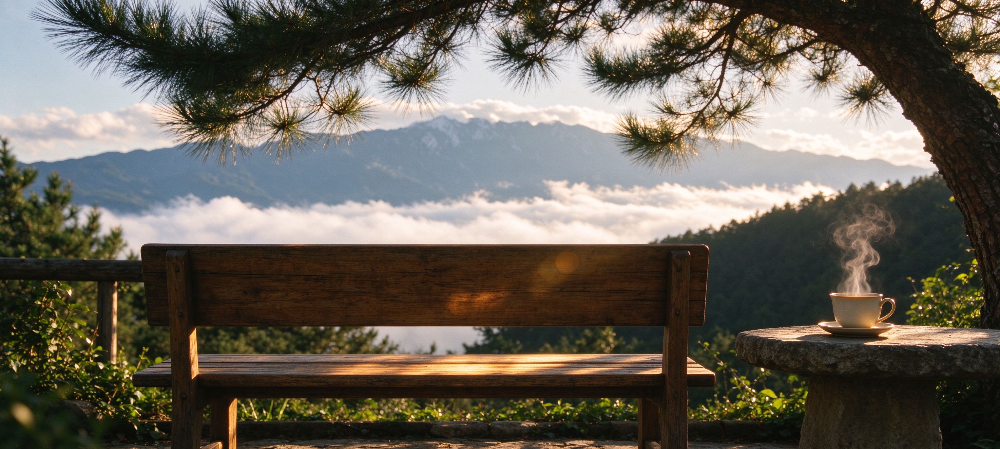
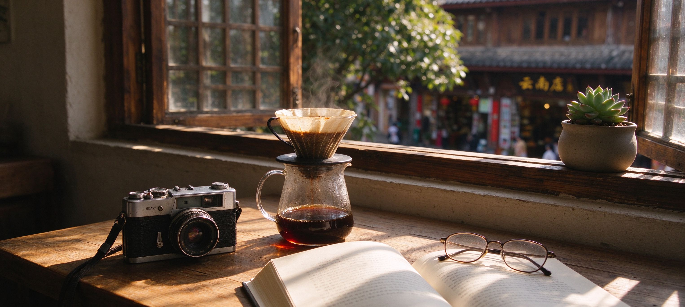
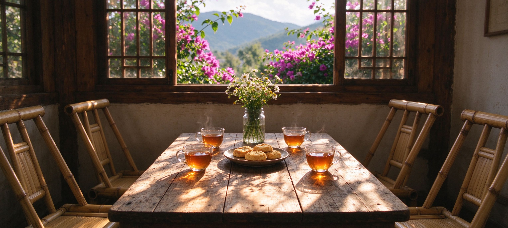
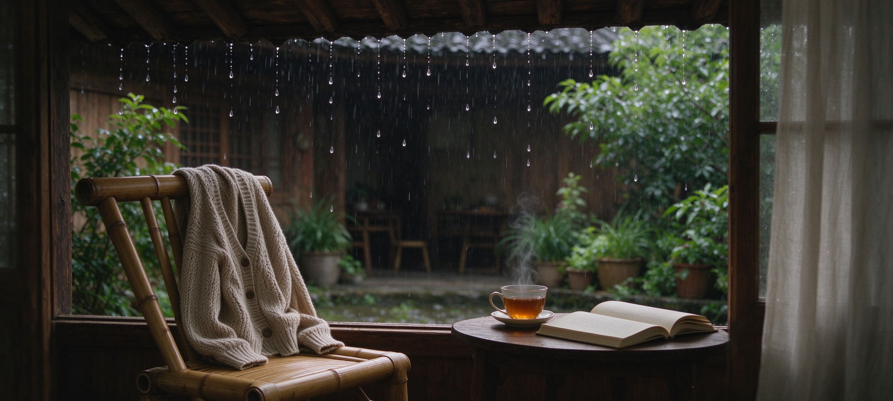
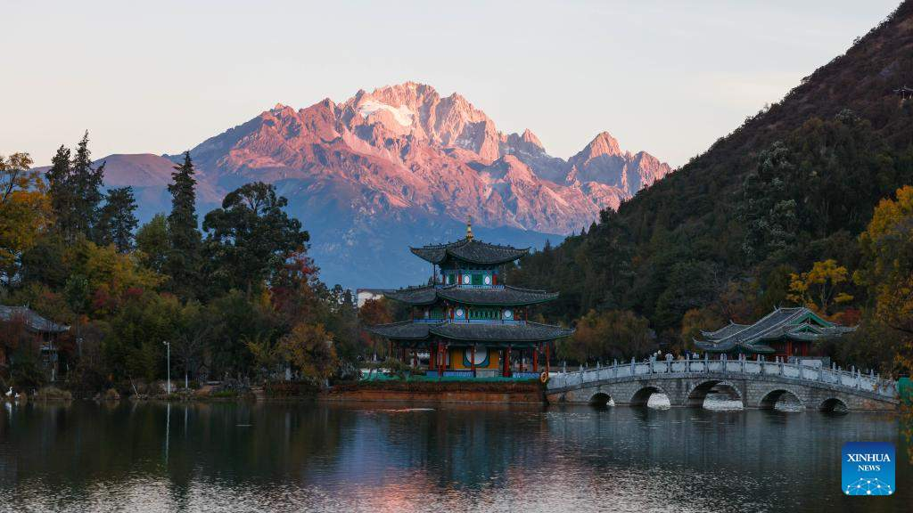
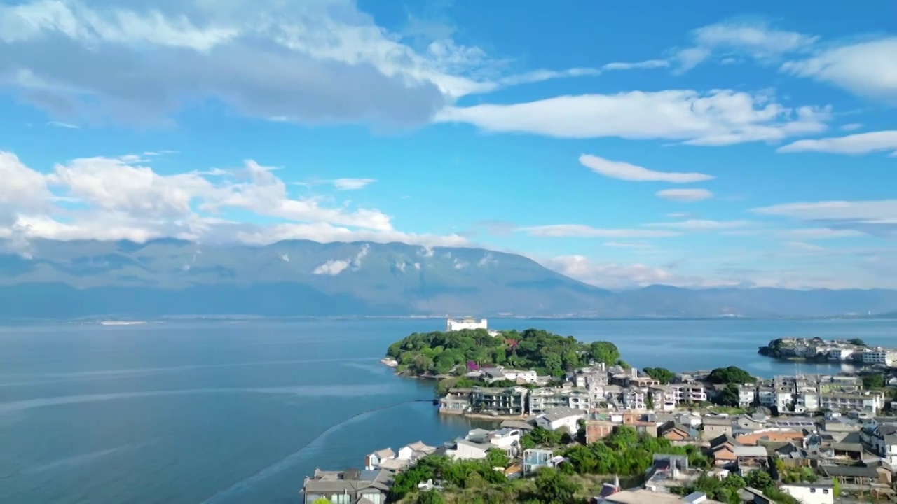
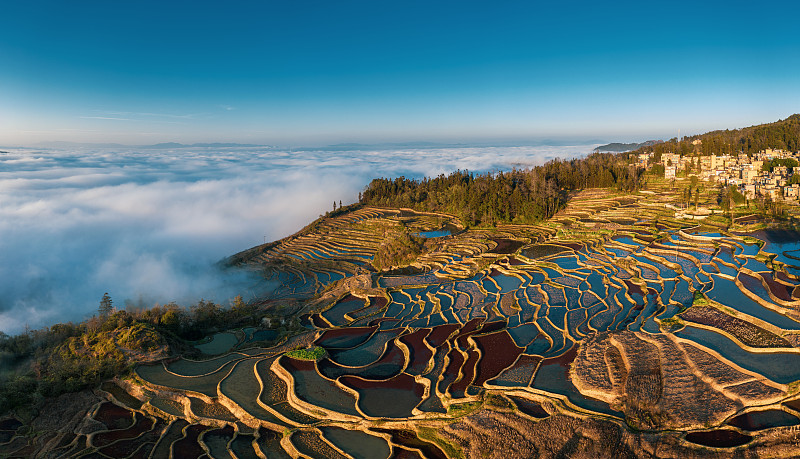
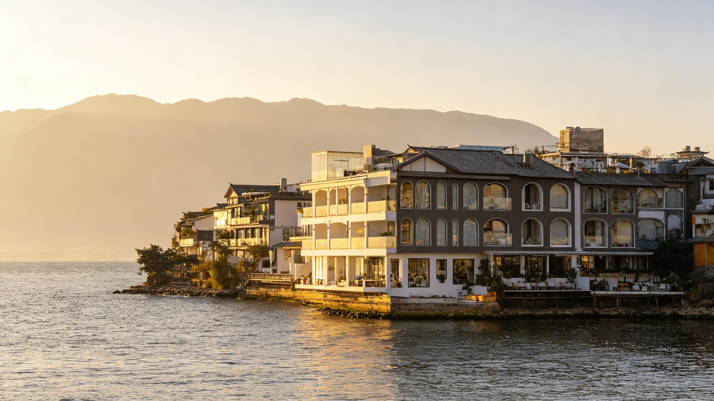
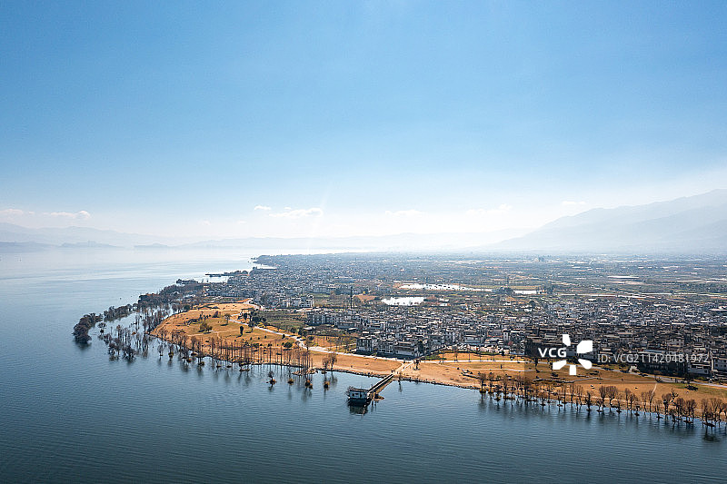
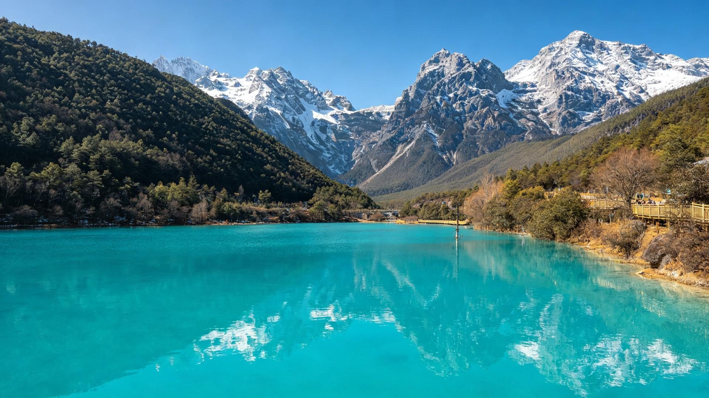
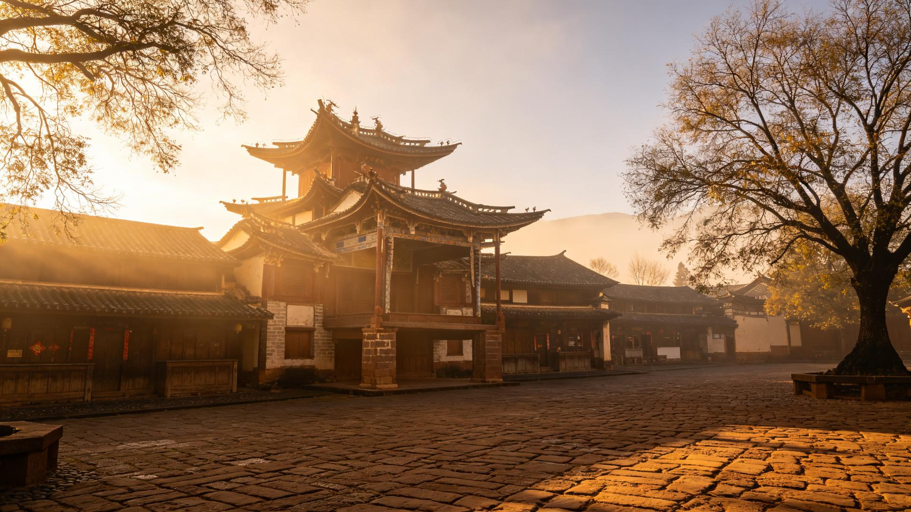
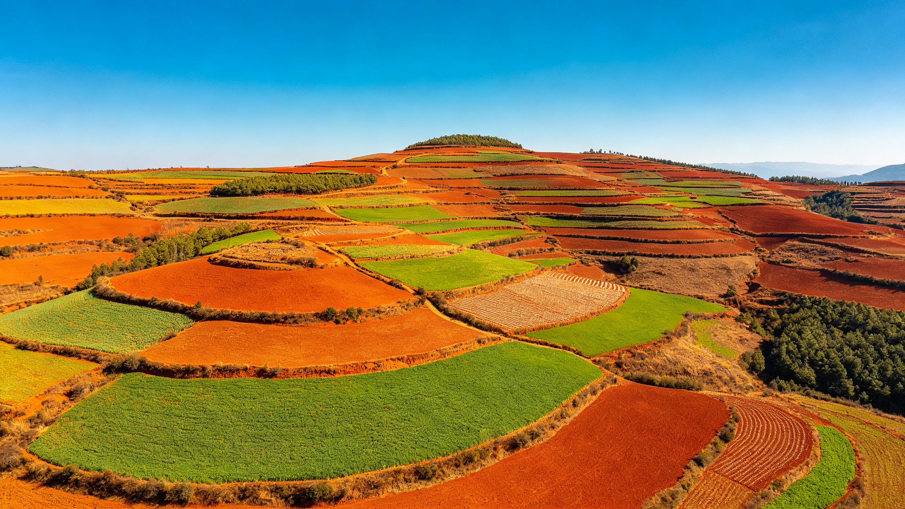
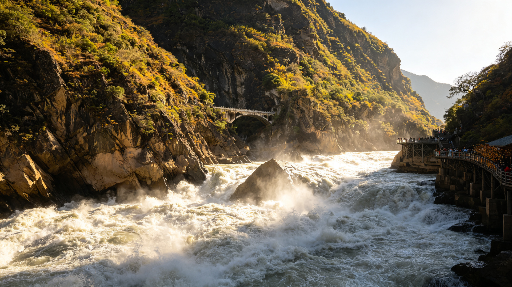
云暖・旅居 · 在云南做慢生活服务多年
有人一口吞了，有人待了几天就走。停下来，留下来——不只是尝甜，是在慢下来的日子里，重新做回自己。
在云南，不用赶路，不用回消息，不用做谁的员工、谁的父母、谁的依靠。
有多久，没有这样过了？
一人一定制
一地一管家
四个词，说清旅居
旅居不是换一个地方旅游，是换一种方式过日子。
一地一管家，买菜就医琐碎全接住，家人每日看得见。
一天一件生活主题，剩下的时间还给晨光与风。
精品院落，认得你的早点摊，住成这里的日常。
菜市场日、朋友家饭局日，不是菜单是生活。
两种生活方式
同样在云南住进日子，换一种过法。




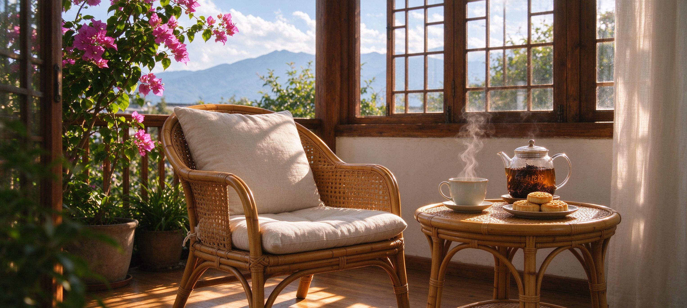
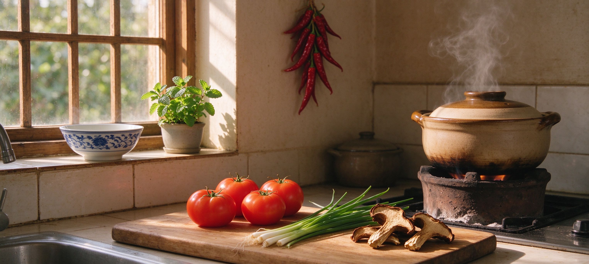
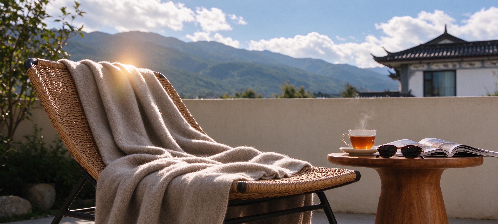
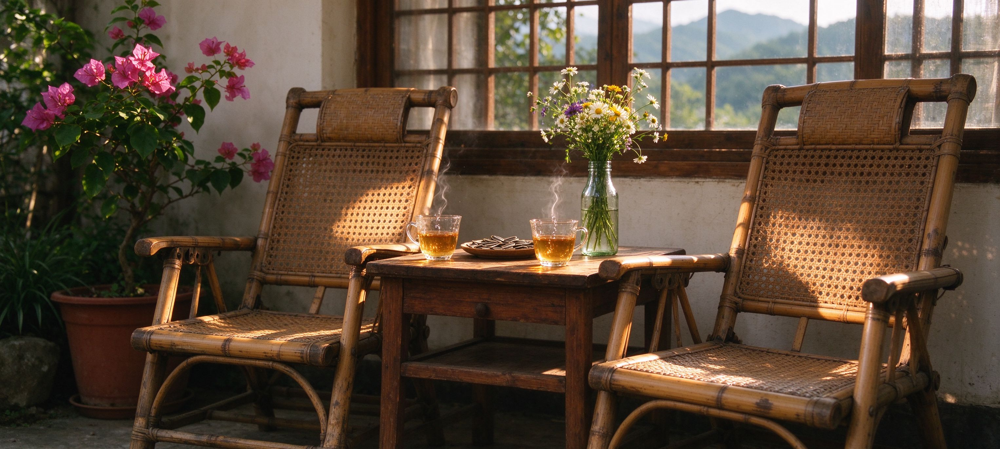
还有第三种过法：以工换住 · 康养工作网络——想康养却还没工作的，用力所能及的事换住、换三餐、换康养。
旅居体验包 · 自选组合
以生活模式，真实体验当地的生活与温度——用生活感，而不是行程表。16 个地州自由选，串成你自己的线路。
管家完成「生活接入」：接站入住、家电讲解、办生活卡、认菜市 / 医院 / 药店的路，见管家与邻居——当天不安排任何景点。
每日 1 件生活主题（菜市场日 / 朋友家饭局日 / 温泉日 / 非遗工坊日），其余时间还给晨光与风；邻里把日常发进家属安心群。
上午动车，下午安顿。转场本身是景观路；下一站管家已备好入住与生活地图，行李与就医档案随行交接。
跟管家认摊、买当季菜，回来做一顿家常饭。
去本地人家做客，吃一顿真正的家常饭。
把高原的风泡进身体里，慢慢待一下午。
白族扎染、纳西东巴、藏地手作——学一样带回家。
16 州 · 自由搭配
版图是身份，不是路线。它是连绵千里的群山，是分属不同季风的河谷与高原，是 16 片土地各自生长出来的呼吸与烟火。不必一次看完——先读懂它的每一面，再选择一处，安顿下来。

香格里拉的静谧高处
夏白天 18-22℃ · 夜 8-10℃｜冬白天 6-10℃ · 夜 -8至-15℃

三江并流的峡谷人家
夏白天 28-32℃ · 夜 22℃｜冬白天 22-24℃ · 夜 10℃

古城与雪山的对望
夏白天 22-25℃ · 夜 13℃｜冬白天 14-16℃ · 夜 0-3℃

苍山洱海之间
夏白天 24-26℃ · 夜 15℃｜冬白天 15-18℃ · 夜 3-5℃

腾冲的温泉与古镇
夏白天 24-26℃ · 夜 17℃｜冬白天 17-19℃ · 夜 5℃

边境线上的傣乡
夏白天 30-33℃ · 夜 22℃｜冬白天 23-25℃ · 夜 10℃

佤乡与茶山
夏白天 26-28℃ · 夜 18℃｜冬白天 21-23℃ · 夜 9℃

茶山雾里的栖居
夏白天 27-29℃ · 夜 19℃｜冬白天 21-23℃ · 夜 11℃

北回归线的雨林
夏白天 33-38℃ · 夜 22-24℃（4月极端可达40℃+）｜冬白天 24-26℃ · 夜 13-15℃

彝州的山川旧事
夏白天 25-27℃ · 夜 17℃｜冬白天 16-18℃ · 夜 4℃

春城的晨昏
夏白天 25-28℃ · 夜 17℃｜冬白天 15-18℃ · 夜 3-5℃

高原湖群的光
夏白天 26-28℃ · 夜 17℃｜冬白天 17-19℃ · 夜 5℃

珠江源头的辽阔
夏白天 23-25℃ · 夜 15℃｜冬白天 14-16℃ · 夜 2℃

乌蒙山的云上人家
夏白天 22-24℃ · 夜 15℃｜冬白天 10-12℃ · 夜 -3至0℃

元阳梯田的晨雾
夏白天 28-30℃ · 夜 20℃｜冬白天 20-22℃ · 夜 10℃

喀斯特的山水
夏白天 27-29℃ · 夜 19℃｜冬白天 21-23℃ · 夜 9℃
被接住的日子
三种最常见的来法，三种被接住的样子。以下为典型客群旅程梳理（示意），不指向具体个人；真实个案以签约沟通为准。
常见问题
价格私人定制，因人、因季、因房型与管家服务浓度而定。总价包含所列全部服务项目及税费，除明示自选项目外不另行收取任何费用；签约前出具书面合同，逐项可勾选、可验收。
体验包一地一周起，16 州自由组合、天数自填（一周 / 半个月 / 一个月随选随叠）。想住更久也完全可以——安居模式支持 15 天到数年。
可以。入住当天是「安顿日」，管家完成生活接入：接站、入住办理、家电讲解、认菜市 / 医院 / 药店的路、建家属安心群——当天不安排任何景点。
我们最看重这条。一地一管家、家属安心群让家人每天看得见、24 小时应急电话在线、随方案赠送或代购旅游意外险（含医疗）。医疗边界也写进合同：管家不做任何诊疗建议。
表单里的「特殊需求」或直接跟管家说明：无障碍、慢病提醒、饮食禁忌、过敏等，都会在方案中评估并落实。
就近就有生活超市，可配送上门；也可以在我们生活商城下单等待配送上门；管家代购也可以。
转场日安排上午动车、下午安顿，转场本身是景观路。下一站管家已备好入住与生活地图，行李与就医档案随行交接。
10 分钟内回复 · 也可以直接拨打王先生 132 0888 8618